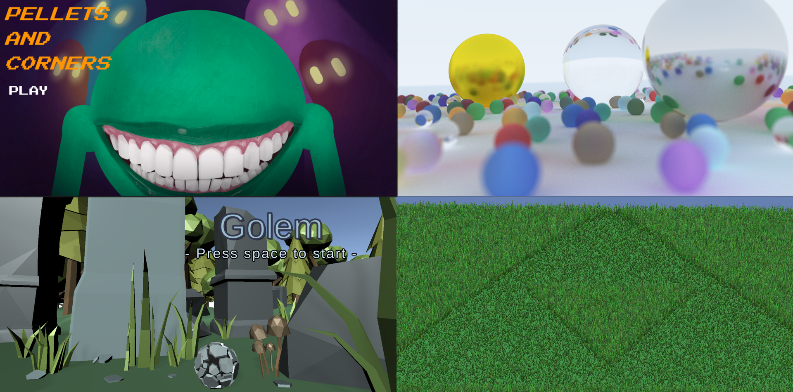

Hi.
I'm DENIS LEVESQUE
I graduated from the University of Manitoba with a degree in Computer Science, specializing in Computer Graphics. I have 12 months of industry experience through internships at places like Amazon.
Below, you can find a selection of personal and school projects highlighting my various interests. From Ray Tracing to Gameboy Assembly Programming, I enjoy working on projects with a heavy visual component.